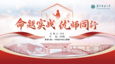
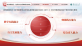
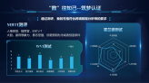
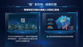
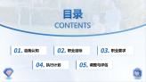
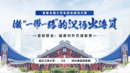
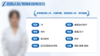

| 学校 | 项目名称 | 获奖情况 |
| 武汉体育学院 | 竞无止境 共赴荣耀 | 国赛金奖 |
| 燕山大学 | 法律人生 | 国赛金奖 |
| 华中师范大学 | 全媒体国际新闻记者 | 国赛金奖 |
| 湖北大学 | 基因编辑研究院 | 国赛金奖 |
| 武汉职业技术学院 | 丝绸之路 | 国赛银奖 |
| 武汉理工大学 | 氢燃料电池研发工程师 | 国赛银奖 |
| 武汉工商学院 | 三性互融 四业认知 | 省赛金奖 |
| 广东工程职业技术学院 | 助力数字中国 | 省赛铜奖 |
| 广东工程职业技术学院 | 光影交织视觉间 瑕疵毕现寸心专 | 省赛铜奖 |
| 广东工程职业技术学院 | 数商兴农 智创未来 | 省赛铜奖 |
全国大学生职业规划大赛